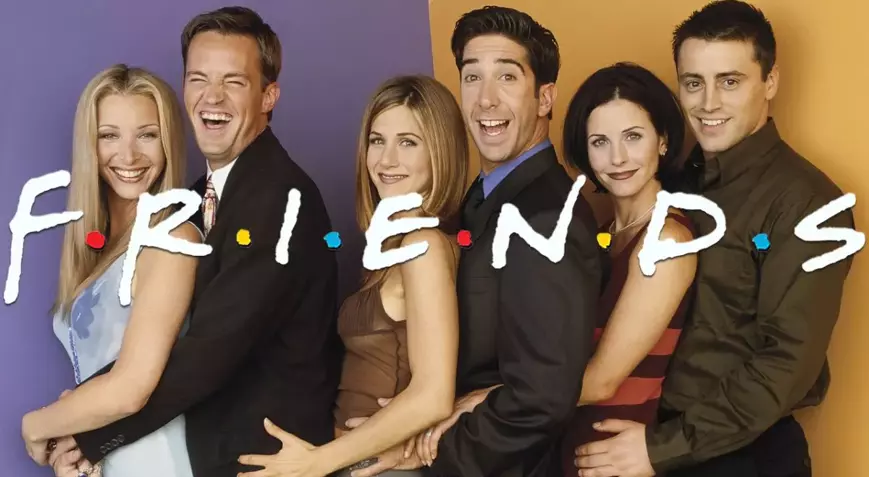

Merhaba ben Tuğçe Genç. Ankara'da yaşıyorum. Müzik dinlemeyi ve film-dizi izlemeyi seviyorum.
Friends dizisi, 20'li yaşlarında hepsi birbirinden farklı karakterde olan 3 kadın ve 3 erkek karakterden oluşan New York'ta yaşadıkları hareketli, komik, eğlenceli ve hayat dolu maceraları konu alıyor.
